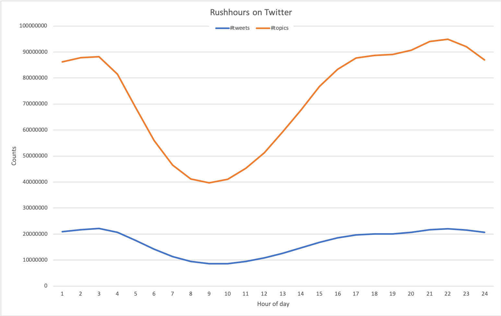
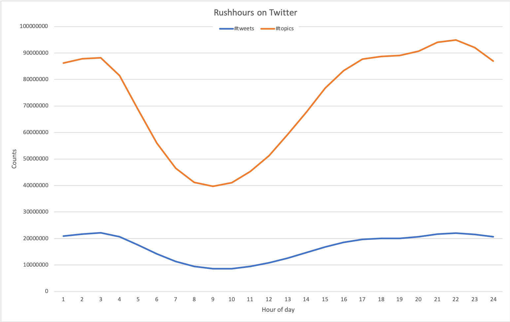
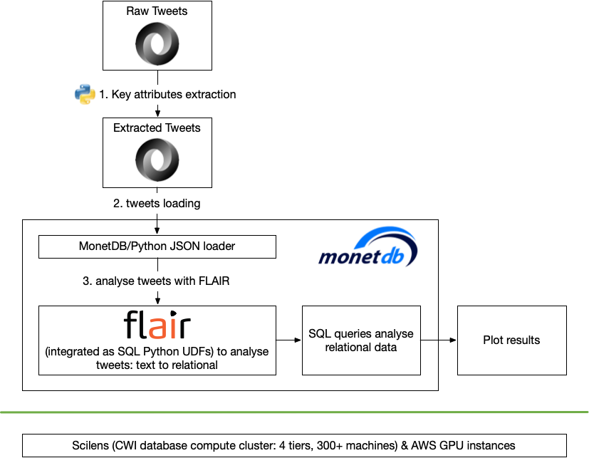
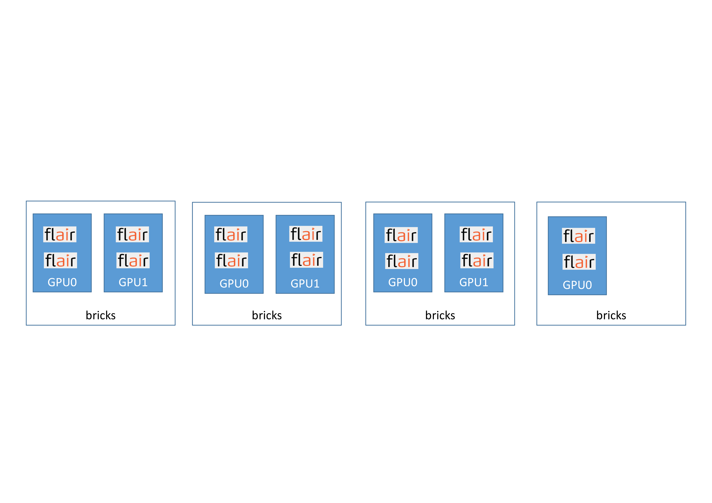
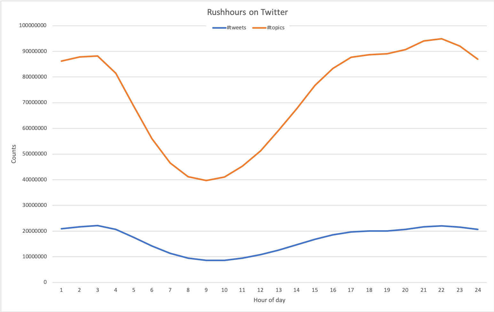
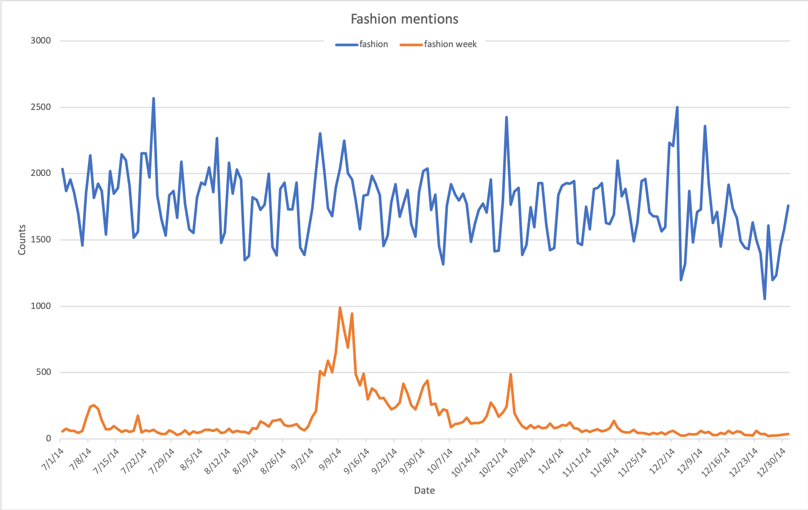
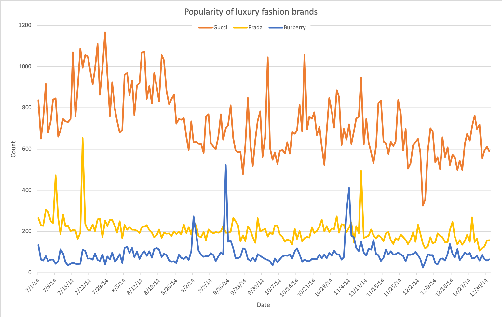
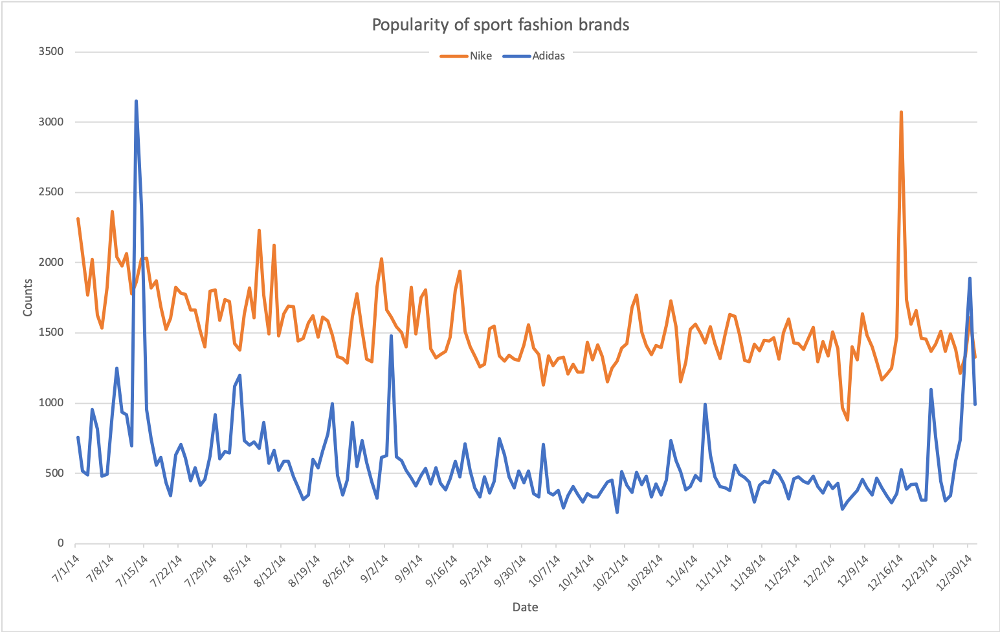
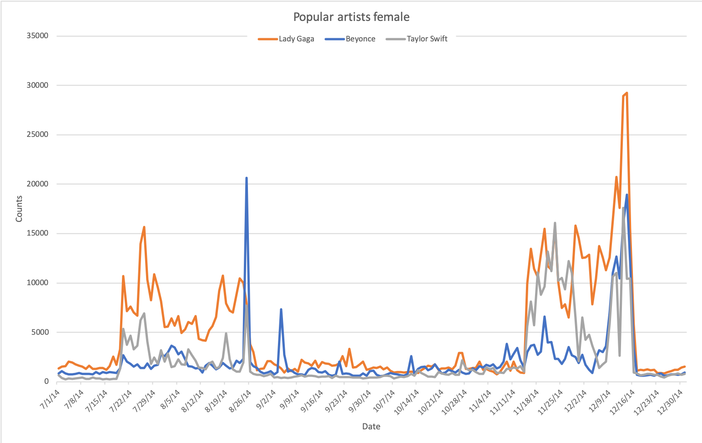
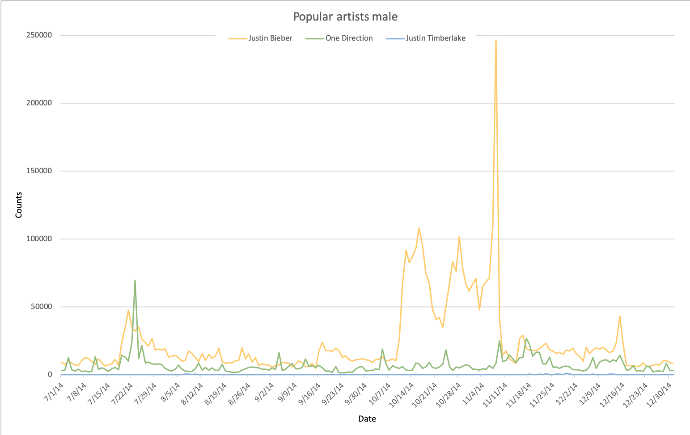

In this section, we describe a demo application we have built for trend detection in Twitter text. This demo is built using the in-database text analysis integration stack. We leverage the data management and analysis power of the relational database system MonetDB, and the natural language processing power of the machine learning library FLAIR to jointly analyse the topics discussed in a large Twitter data set to detect trends. In our analysis, we focus on fashion related trends.
Traditionally, DBMSs only have limited text processing ability, such as substring search and regular expression search; while the machine learning community has much more advanced text analysis tools which are capable of, for instance, understanding the meaning of the text. To combine the strength of both worlds, we have presented a FashionBrain Integrated Architecture (FaBIAM).
Through embedded SQL user defined functions (UDFs) written in, e.g., Python, we can enrich the analytical features of MonetDB with various advanced technologies.
First, we give a brief description of the data set.
Second, we describe how the demo is implemented.
Finally, we present several fashion trends we have detected in this Twitter data set using our integrated MonetDB-FLAIR stack.
The Twitter data set we have used for this demo contains tweets collected in the period of Jul-Dec, 2014, which is roughly 1% of all tweets sent in this period.
All information of each tweet is stored in one JSON object.
The table below shows an anonymised example of one such JSON object containing the information of one tweet:
{ "created_at":"Mon Jul 01 00:00:00 +0000 2014", | "description":"...",
"id":000000000000000000, | "protected":false,
"id_str":"000000000000000000", | "verified":false,
"text":"RT @... : ...", | "followers_count":,
"source":"", | "friends_count":,
"truncated":false, | "listed_count":,
"in_reply_to_status_id":null, | "favourites_count":,
"in_reply_to_status_id_str":null, | "statuses_count":,
"in_reply_to_user_id":null, | "created_at":"??? ??? ?? 00:00:00 +0000 ????",
"in_reply_to_user_id_str":null, | "utc_offset":,
"in_reply_to_screen_name":null, | "time_zone":"...",
"user":{ | "geo_enabled":false,
"id":00000000, | "lang":"??",
"id_str":"00000000", | "contributors_enabled":false,
"name":"...", | "is_translator":false,
"screen_name":"...", | "profile_background_color":"000000",
"location":"...", | "profile_background_image_url":"",
"url":null, | "profile_background_image_url_https":"",
"description":"...", | "profile_background_tile":false,
"protected":false, | "profile_link_color":"000000",
"verified":false, | "profile_sidebar_border_color":"000000",
"followers_count":, | "profile_sidebar_fill_color":"000000",
"friends_count":, | "profile_text_color":"000000",
"listed_count":, | "profile_use_background_image":false,
"favourites_count":, | "profile_image_url":"",
"statuses_count":, | "profile_image_url_https":"",
"created_at":"??? ??? ?? 00:00:00 +0000 ????", | "profile_banner_url":"",
"utc_offset":, | "default_profile":false,
"time_zone":"...", | "default_profile_image":false,
"geo_enabled":false, | "following":null,
"lang":"??", | "follow_request_sent":null,
"contributors_enabled":false, | "notifications":null
"is_translator":false, | },
"profile_background_color":"000000", | "geo":null,
"profile_background_image_url":"", | "coordinates":null,
"profile_background_image_url_https":"", | "place":null,
"profile_background_tile":false, | "contributors":null,
"profile_link_color":"000000", | "retweet_count":,
"profile_sidebar_border_color":"000000", | "favorite_count":,
"profile_sidebar_fill_color":"000000", | "entities":{
"profile_text_color":"000000", | "hashtags":[{"text":"...","indices":[,]}],
"profile_use_background_image":true, | "trends":[],
"profile_image_url":"", | "urls":[],
"profile_image_url_https":"", | "user_mentions":[],
"default_profile":false, | "symbols":[]
"default_profile_image":false, | },
"following":null, | "favorited":false,
"follow_request_sent":null, | "retweeted":false,
"notifications":null | "possibly_sensitive":false,
}, | "filter_level":"???",
"geo":null, | "lang":"??"
"coordinates":null, | },
"place":null, | "retweet_count":0,
"contributors":null, | "favorite_count":0,
"retweeted_status":{ | "entities":{
"created_at":"??? ??? ?? 00:00:00 +0000 ????", | "hashtags":[{"text":"...","indices":[,]}],
"id":000000000000000000, | "trends":[],
"id_str":"000000000000000000", | "urls":[],
"text":"...", | "user_mentions":[{
"source":"", | "screen_name":"...",
"truncated":false, | "name":"...",
"in_reply_to_status_id":null, | "id":000000000,
"in_reply_to_status_id_str":null, | "id_str":"000000000",
"in_reply_to_user_id":null, | "indices":[,]
"in_reply_to_user_id_str":null, | }],
"in_reply_to_screen_name":null, | "symbols":[]
"user":{ | },
"id":000000000, | "favorited":false,
"id_str":"000000000", | "retweeted":false,
"name":"...", | "possibly_sensitive":false,
"screen_name":"...", | "filter_level":"...",
"location":"...", | "lang":"??"
"url":"", | }
In total, there are ~1 billion JSON objects, of which there are 800+ million "actual tweets" (the remaining JSON objects contain information about deleted tweets; they are discarded after the pre-processing).
The following figure shows the steps in which this demo has been implemented.

For this work, we have used machines both from our Scilens database computing cluster, as well as several AWS GPU instance.
The majority of the work was done using the "Bricks" machines, each containing an Intel Xeon E5-2650 CPU with 32 cores, 256 GB RAM, 5.4 TB HDD.
Some of the Bricks machines also has GPU(s), e.g. "Bricks16" has two nVIDIA GeForce GTX 1080 Ti GPUs with 12 GB on-card Memory.
Because we are mainly interested in using FLAIR to analyse the Twitter texts in this demo, and because we do not want to include personal information due to privacy issues, we first extracted a small number of key attributes from the raw Twitter data for our further analysis: Tweet_ID, Date, Language, Retweet_ID, Text.
Then, we have implemented a Python script, which reads the raw Twitter data from each file, extracts the required attributes, and outputs the values of the attributes as JSON objects, whose format is supported by the MonetDB/Python JSON loader function, into a file.
The extraction takes 6~7 minutes per file, hence, ~20 hours in total.
By the time of this writing (i.e. end of Nov 2019), MonetDB is able to directly load the raw Twitter JSON data.
In this step, we loaded all files into MonetDB and did some post-loading processing of the data.
First, we created a Python LOADER function:
CREATE LOADER tweets_loader(filename STRING) LANGUAGE PYTHON {
import json
f = open(filename)
_emit.emit(json.load(f))
f.close()
};
Then the JSON files are loaded one by one:
sql>CREATE TABLE tweets FROM LOADER tweets_loader(`/tweets_json/tweets_07_01.json') ;
operation successful
sql>COPY LOADER INTO tweets FROM tweets_loader(`/tweets_json/tweets_07_02.json') ;
operation successful
...
sql>COPY LOADER INTO tweets FROM tweets_loader(`/tweets_json/tweets_12_30.json') ;
operation successful
sql>COPY LOADER INTO tweets FROM tweets_loader(`/tweets_json/tweets_12_31.json') ;
operation successful
The "Date" strings from the raw Twitter data are not recognised by MonetDB as timestamps. So, after the initial loading, those "Date" strings are stored in a character large object (CLOB) column, which occurs more disk storage and is less efficient in query processing than when the values are stored as binary timestamps. Therefore, as a final step in data loading, we cast the "Date" strings into timestamps:
ALTER TABLE tweets ADD COLUMN "TimeStamp" TIMESTAMP;
UPDATE tweets SET "TimeStamp" = STR_TO_TIMESTAMP("Date", '%a %b %d %H:%M:%S +0000 %Y');
ALTER TABLE tweets DROP COLUMN "Date";
On average, loading one JSON file takes ~25 seconds. Converting the "Date" strings took ~17 minutes. In total, this step took ~1.5 hour. The final result of this step is a table called "tweets" with ~400 million tuples table with a disk size of ~68 GB:
sql>\d tweets
CREATE TABLE "sys"."tweets" (
"Tweet_ID" BIGINT,
"Language" CHARACTER LARGE OBJECT,
"Retweet_ID" CHARACTER LARGE OBJECT,
"Text" CHARACTER LARGE OBJECT,
"TimeStamp" TIMESTAMP
);
sql>SELECT COUNT(*) FROM tweets ;
+-----------+
| L2 |
+===========+
| 404578963 |
+-----------+
1 tuple
sql>SELECT (SUM("count" * typewidth) + SUM(heapsize))/1024/1024/1024
more>FROM sys.storage() WHERE table = 'tweets';
+------+
| L5 |
+======+
| 68 |
+------+
1 tuple
Finally, we use FLAIR to process the tweet texts, i.e. extract the topics discussed in them.
First, we trained a Named-Entity Recognition (NER) model and a multilingual Part-of-Speech (POS) model.
The accuracy of the results were low, because tweets only contain short texts and are extremely messy with a lot of grammatical errors and shorthands.
Then, we used two models provided by Flair: a multilingual NER model and a multilingual POS model, which gave us better results.
In particular, the pre-trained POS-multi model was quite good in tagging of nouns and proper nouns.
The code snippet below shows one such SQL Python UDFs, which uses the named-entity recognition (NER) model (line 11-14) on the input STRING.
It returns the entities found by FLAIR together with the timestamp associated with the input string and some auxiliary information of this entity (line 30).
Finally, we apply this function on the text from the tweets table and store the results in a new table entities (line 32).
1 CREATE FUNCTION flair_entity_tags (ts TIMESTAMP, s STRING)
2 RETURNS TABLE(ts TIMESTAMP, entity STRING, tag STRING, start_pos INT, end_pos INT)
3 LANGUAGE python
4 {
5 from flair.data import Sentence
6 from flair.models import SequenceTagger
7 import numpy
8
9 # Make sentence objects from the input strings
10 sentences = [Sentence(sent, use_tokenizer=True) for sent in s]
11 # load the NER tagger
12 tagger = SequenceTagger.load('ner')
13 # run NER over sentences
14 tagger.predict(sentences)
15
16 tss = []
17 entities = []
18 tags = []
19 start_poss = []
20 end_poss = []
21
22 for idx,sent in numpy.ndenumerate(sentences):
23 for e in sent.get_spans('ner'):
24 tss.append(ts[idx[0]])
25 entities.append(e.text)
26 tags.append(e.tag)
27 start_poss.append(e.start_pos)
28 end_poss.append(e.end_pos)
29
30 return [tss, entities, tags, start_poss, end_poss]
31 };
32 CREATE TABLE entities AS SELECT * FROM flair_entity_tags((SELECT "TimeStamp", "Text" FROM tweets));
Even though we have worked with colleagues from Zalando research to speed up FLAIR, applying the FLAIR models on this amount of tweets sequentially is still a very time consuming task which can take weeks.
Fortunately, multiple Bricks machines have GPUs.
So, eventually, we decided to divide the tweets table into several smaller pieces and run multiple FLAIR UDFs in parallel, as shown in the following figure:

We grabbed all Bricks machines that were still available in August 2019 with three of them having 2 GPUs and one having 1 GPU.
On each GPU, we could run 2 FLAIR functions.
In this way, we were able to speed up the FLAIR execution time with a factor of 14.
By using the FLAIR models, we identified in total ~1.7 billion topics discussed in the tweets of this Twitter data set.
All topics are united into a view called all_topics that only contains the triple (dte, hr, topic) to denote the date, hour-of-day of a topic.
With the query processing power of an analytical DBMS and the text analysis power of a multilingual machine learning library, we can gain a lot of information from this Twitter data set.
Below, we limit the presented results to several fashion related topics without involving any personal information (of Twitter users).

The two figures above show the number of tweets sent and number of topics discussed per day or per hour-of-day, respectively.
The amount of activities on Twitter is more or less stable in this period.
The spike on November 9th is possibly caused by several popular events happening at the same time, e.g. some news about Justin Bieber and the plethora of fans campaigning to get the girl group Fifth Harmony the top prize in the 2014 MTV European Music Awards. Unfortunately, we cannot find any good explanation for the negative spike in December 2014.
The per-hour figure shows that Twitter users are most active from 5 o'clock in the afternoon until 3 o'clock in the morning, and lest active earlier in the morning.
The following figure shows that the interest in fashion among the Twitter users is fairly stable over time.

Some of the discussions about fashion is devoted to discussing the fashion week, a fashion event organised several times per year in different locations for a whole week.
Throughout the year, there is a small amount of tweets about fashion week.
However, during the week of an event, this topic obvious attracts more attention, such as shown by the peak in September 2014, which was when the New York Fashion Week was held.
The following figures show the popularities of several luxury fashion brands and sport brands, respectively.


According to this data set, Gucci is far more popular than Prada and Burberry. Also, the popularity of the three brands barely overlaps. The amount of interest in Gucci fluctuates considerably over time, while the interests in Prada and Burberry are fairly stable. Spikes in the graph, e.g. those of Prada and Burberry, are generally caused by marketing events.For instance, on Sep. 15th, it was the Full Burberry Prorsum Womenswear S/S15 Show; while on Nov. 19th, the Pradasphere exhibition started in HongKong.
Nike is generally more popular than Adidas. However, with some strong market, Adidas some times attracts more attention than Nike. For instance, on Jul. 13th, Adidas release the adiZero Prime Boost in the US; and on Dec. 30th, Adidas released the T-MAC 3 “Chinese New Year”.
By studying the popularity, we can get an idea of how much impact a famous person can have when they do something (i.e. find influencers).
The following figures how the popularity of several female and male music artists, respectively.


From these graphs, we can observe several things.
First, the amount of interest the female artists attract was largely affected by famous music event.
The peak in July - August goes with the 2014 MTV video music awards; while the peak in November goes with the 2014 American music awards.
However, the interests in male artists do not show such clear correlation (or maybe they are a bit overshadowed by the news around Justin Bieber).
Second, we already know that Beyonce has not been very active in the recent years, so the social media seems to be a bit quiet around her.
However, one live performance of her at the 2014 MTV Video Music Awards on Aug. 25th drove her popularity right through the platform formed by Lady Gaga.
Clearly, Beyonce still has a lot of fans.
From this, we can probably conclude that as an artist/influencer, Beyonce is a hibernating giant.
Once she is back to action, we can expect huge impact from her.
Finally, by comparing the scale of the y-axis of both figures, one can see that the male artists attract by far more attention from the Twitter users than the female artists.
This is probably because there is a huge amount of teenage girls on Twitter, which drives the popularities of teenage artists and bands.
The huge spike in Justin Bieber's graph was probably caused by that on November 8th, several pictures of Justin Bieber and Hailey Baldwin were put online.